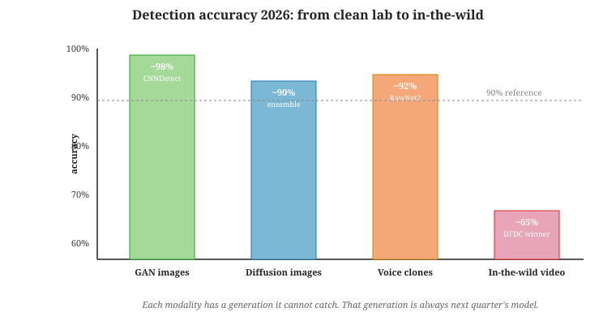

"Every deepfake detector has a generation it cannot catch. That generation is always next quarter's model."
Hallux, Cat-And-Mouse-Veteran AI Agent
Watermarks and content credentials only protect content from cooperative generators. For the rest of the synthetic-media universe (jailbroken open-weight models, adversarial actors who strip metadata), detection is the fallback. The detector landscape in 2026 looks like this: GAN-era deepfakes are detectable at >98% accuracy by specialized classifiers; diffusion-era images and video are detectable at 85-95% with ensemble approaches; voice clones from current TTS systems are detectable at 90-95%; the hardest cases are recompressed and "in-the-wild" media where degradation degrades detector accuracy as much as it degrades any signal. This section surveys the dominant detection algorithms, fingerprint-vs-classifier-vs-frequency analysis, video temporal artifacts, and audio biomarker analysis. For LLM and multimodal agent teams, this matters because the same agents that generate text, images, voice, and video at scale also need to gate user-uploaded media: the detector stack here is the safety guardrail that lets an LLM-based platform refuse to ingest, summarize, or amplify content it cannot verify.

Prerequisites
This section assumes the image and video generation pipelines from Section 19.7 and Section 20.7, and the binary-classifier-training basics from Section 0.1.
54.4.1 The Detection Problem and Its Categories
Deepfake detection is the textbook example of an arms race: every classifier that hits 99 percent accuracy on a benchmark gets a counter-paper within weeks that drops it to 60 percent on slightly different generators. The 2024 DeepFake Detection Challenge winner achieved roughly 65 percent on in-the-wild video, which is to say it would have been fired from any actual law-enforcement job. The state of the field is a perpetual stalemate where forensic researchers and generative researchers cite each other politely while quietly racing to next year's NeurIPS.
"Detect synthetic media" is not one problem; it is at least four:
- Image classification: is this still image AI-generated, real photograph, or somewhere in between (edited photograph, AI-assisted illustration)?
- Face manipulation: is this a real photograph that has had a face swapped, expressions altered, or lip movements re-synthesized to match different audio?
- Video synthesis: is this video clip fully synthetic, or partially edited?
- Voice cloning: is this audio of a real person actually that person speaking, or a TTS system trained on their voice?
The techniques differ by category. Image classifiers exploit generator-specific frequency-domain fingerprints. Face-manipulation detectors look at micro-expressions, head-pose consistency, and per-frame blending artifacts. Video detectors add temporal consistency: are blinks present at natural rates, are lighting reflections consistent across frames, do pulse signals from the skin (the "remote photoplethysmography" trick) look biological? Voice detectors look at formant trajectories, breath patterns, and the high-frequency components that TTS systems still get slightly wrong.
54.4.2 GAN-vs-Diffusion Fingerprints
Every generator leaves a statistical fingerprint. For GAN-era models (StyleGAN family, BigGAN, ProGAN), the fingerprint is a checkerboard pattern in the high-frequency Fourier spectrum, an artifact of transposed-convolution upsampling layers. Wang et al. (2020) showed that a single CNN trained on one GAN's outputs generalizes to detect many other GANs because the upsampling artifacts are architecturally similar.
For diffusion models (Stable Diffusion, DALL-E 3, Imagen, Midjourney), the fingerprint is different and more subtle. Diffusion outputs exhibit smoother spectral profiles than natural images, with characteristic peaks at certain frequencies tied to the denoising schedule. Corvi et al. (2023) and Ricker et al. (2024) characterized these for the major commercial models. Detection accuracy on within-distribution test sets is 95-99%; out-of-distribution generalization (a model trained on Stable Diffusion 1.5 evaluating Stable Diffusion 3.5) is lower, in the 80-90% range.
import torch
from PIL import Image
from torchvision import transforms
from transformers import AutoModelForImageClassification, AutoImageProcessor
# Several open detectors exist. Below uses Umm-Maybe's AI-image-detector
# (DeiT-based, trained on a mix of GAN and diffusion outputs).
MODEL = "umm-maybe/AI-image-detector"
processor = AutoImageProcessor.from_pretrained(MODEL)
detector = AutoModelForImageClassification.from_pretrained(MODEL).eval()
def detect_synthetic_image(path: str) -> dict:
img = Image.open(path).convert("RGB")
inputs = processor(images=img, return_tensors="pt")
with torch.no_grad():
logits = detector(**inputs).logits
probs = torch.softmax(logits, dim=-1)[0]
labels = detector.config.id2label
return {
labels[i]: float(probs[i]) for i in range(len(labels))
}
print(detect_synthetic_image("uploaded.jpg"))
# {'human': 0.04, 'artificial': 0.96}54.4.3 Video Detection: Temporal Artifacts Are Decisive
Static-frame analysis treats a video as a sequence of independent images and votes. This works for low-effort fakes (running a face-swap model per frame) but misses sophisticated content that fixes per-frame artifacts at the cost of temporal inconsistency. Temporal-aware detectors are now mandatory.
Four temporal signals dominate the 2026 detector stack:
- Eye blink rate. Humans blink ~17 times per minute at rest. GAN-era face-swap deepfakes consistently undercounted blinks because training images rarely show closed eyes; diffusion-era and modern face-rig models have largely fixed this but blink-pattern statistics (blink duration, inter-blink interval distributions) still differ.
- Head pose consistency. Real head movement obeys biomechanical priors; synthetic head movement, especially when the synthesizer is rendering only a face onto an existing body, shows micro-jitter that real footage does not.
- Pulse signal (rPPG). The face's color changes subtly with each heartbeat as blood perfuses the skin. A remote photoplethysmography algorithm can extract this signal from a 5-10 second clip of a real face. Synthetic faces show no pulse signal or a constant amplitude inconsistent with biomechanical reality.
- Lighting and shadow consistency. When a synthesized face is composited over real footage, shadows from the surrounding scene rarely match perfectly. Specialized detectors look for shadow-direction inconsistencies across the face boundary.
![Diagram of a video deepfake detection ensemble. Input video is decomposed into three parallel streams: (1) per-frame image classifier (CNN, outputs frame-level scores); (2) temporal signal extractor (extracts rPPG pulse, blink timing, head-pose smoothness from 5-second windows); (3) audio-video consistency module (compares lip movements to audio phonemes). Each stream emits a probability of being synthetic. A meta-classifier combines them via gradient-boosted trees to produce the final verdict, with a confidence interval. Side panel shows performance: ensemble achieves 94% AUROC on the 2025 DFDC test set.](images/video-detection-ensemble.svg)
54.4.4 Audio Detection: Formants, Breath, and Statistical Naturalness
Voice-cloning detection works on different signals than image detection. The strongest cues are:
- Formant trajectories. Human speech transitions between phonemes smoothly. TTS systems, especially when synthesizing in a target speaker's voice from limited reference audio, produce subtle discontinuities in the formant frequencies.
- Breath and disfluency patterns. Real speakers inhale, pause unevenly, and exhibit fillers ("uh", "um") with specific statistical patterns. TTS systems are increasingly adding these but the distributions are still detectable.
- High-frequency leakage. Many TTS systems undermodel content above 8 kHz; the high-frequency band shows a roll-off pattern characteristic of the vocoder.
- Spectral phase coherence. Real microphone recordings have phase relationships across frequency bins that are determined by the physical recording chain. Synthesizers struggle to match these.
The ASVspoof 2024 challenge measured detection accuracy across a broad mix of TTS systems. Top entries achieved EER (equal error rate) of 2-5% on clean audio. Performance degrades sharply on telephone audio (8 kHz codec, narrow band), where the cues above are partly destroyed by the codec, with EER rising to 10-15% even for state-of-the-art detectors.
The "free lunch" of forensic detection is generator-specific fingerprints; the "expensive lunch" is biometric and biomechanical reasoning. Fingerprints work because generators leave architectural signatures, but they fail when a new generator emerges with a different architecture. Biomechanical reasoning (heart pulse, blink statistics, formant trajectories) is generator-agnostic and survives architecture changes; it costs more compute but is the substrate for durable detection.
54.4.5 The Arms Race: Detector Half-Life
A detector trained on the output of generator G achieves high accuracy on G's outputs. When G is upgraded (Stable Diffusion 1.5 to 2.0 to 3.5), the fingerprint shifts and the detector's accuracy can drop by 10-20 points overnight. Public leaderboards for the major detection challenges show this clearly: top entries from 2023 perform poorly on 2025 evaluation sets.
Three engineering responses:
- Continuous training. Periodically scrape outputs from the latest commercial generators and fine-tune detectors. This is what the consumer-facing detectors (Reality Defender, Hive AI Image Detection, Sensity AI) do, and it is how they justify their subscription pricing.
- Ensembles across model families. One detector per family (GAN, diffusion, autoregressive image transformer) plus a meta-classifier. Generalization improves; per-model accuracy can be slightly lower.
- Generator-agnostic biometric signals. Pulse, blink statistics, formant patterns: these don't depend on the generator's architecture, so they survive generator upgrades. Cost is higher per inference; accuracy ceiling is comparable.
A detector that returns "98% probability synthetic" is not making a statement about reality; it is making a statement about feature similarity to the detector's training distribution. A heavily compressed real photograph can look synthetic to a detector; a high-quality diffusion output can look real if the detector hasn't seen samples from that model. Output decisions on detector scores should always include human review for high-stakes calls (election content, legal evidence, journalism). Section 54.5 covers the adversarial removal techniques that further degrade confidence.
54.4.6 The Production Detection Stack
A 2026-realistic detection deployment for a content platform combines:
- Provenance check first. If C2PA manifest or SynthID is present, use it. Detection is the fallback.
- Lightweight per-frame image classifier. Runs on uploads at scale; flags candidates for deeper analysis.
- Ensemble video analysis for flagged items. Three streams (frame, temporal, audio-video) and a meta-classifier; runs on a smaller fraction of traffic; takes seconds per minute of video.
- Human review for high-confidence-synthetic content involving public figures or sensitive topics. Bypass the "detector is the verdict" pattern entirely for the highest-risk decisions.
A mid-size social platform handles 50 million image uploads per day. Stack: (1) C2PA validator runs on every upload, ~10ms, exposes "Verified Source" label when valid; (2) image classifier ensemble runs on every upload, ~30ms on CPU, ~3% of uploads flagged; (3) flagged items go through a heavier ensemble (~500ms on GPU) with stronger temporal analysis if video; (4) "high confidence synthetic" labels appear on flagged items in user feed; (5) items above 99% confidence that depict identifiable public figures trigger human review within 30 minutes. Reported false positive rate (real images flagged): 0.4%; false negative rate (synthetic items not flagged): 8%. Compliance with TAKE IT DOWN Act 48-hour-removal requirement: met for >98% of NCII reports.
Detection is the provenance fallback when watermarks and credentials are absent or stripped. The 2026 detector landscape splits into generator-fingerprint methods (high accuracy within-distribution, brittle across generator versions) and biometric/biomechanical methods (lower per-class accuracy, more durable across architectures). Production deployments use ensembles, accept ongoing retraining as a cost of doing business, and reserve human review for high-stakes decisions. Detector confidence is a probability of feature match, not a verdict on truth.
Show Answer
Show Answer
Show Answer
Show Answer
Continue to Section 54.5: Limitations: Adversarial Watermark Removal and the Cat-and-Mouse Game. Section 54.5 closes the chapter on a sober note: adversarial watermark removal, the limits of detection, and the cat-and-mouse game that watermarking will never definitively win. We look at recent attacks against SynthID-Text, against C2PA manifest preservation, and against state-of-the-art deepfake detectors, and end with a realistic appraisal of where provenance technology actually fits in the broader trust architecture.